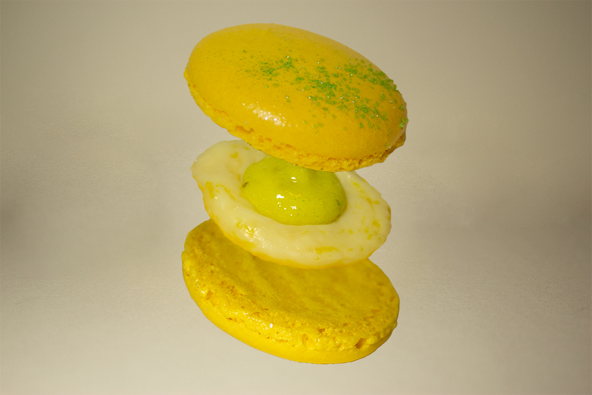
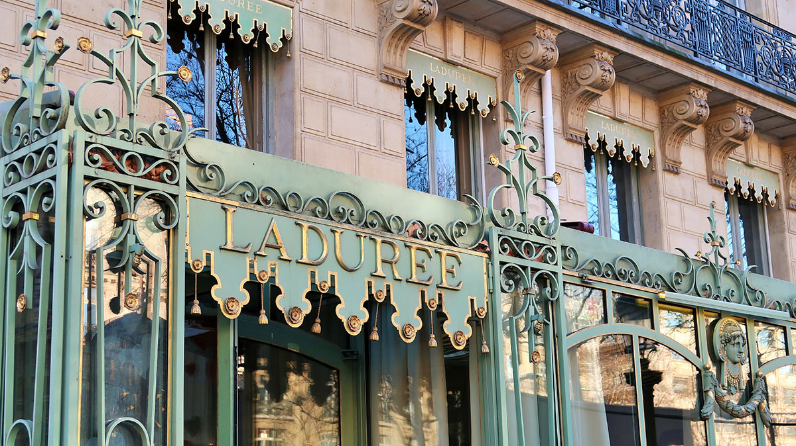
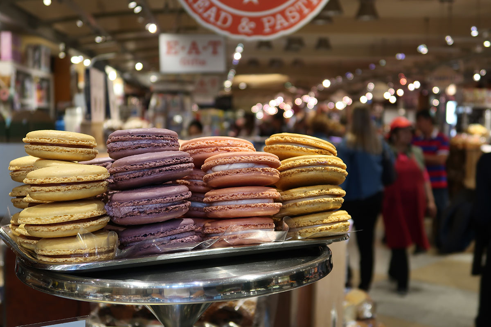
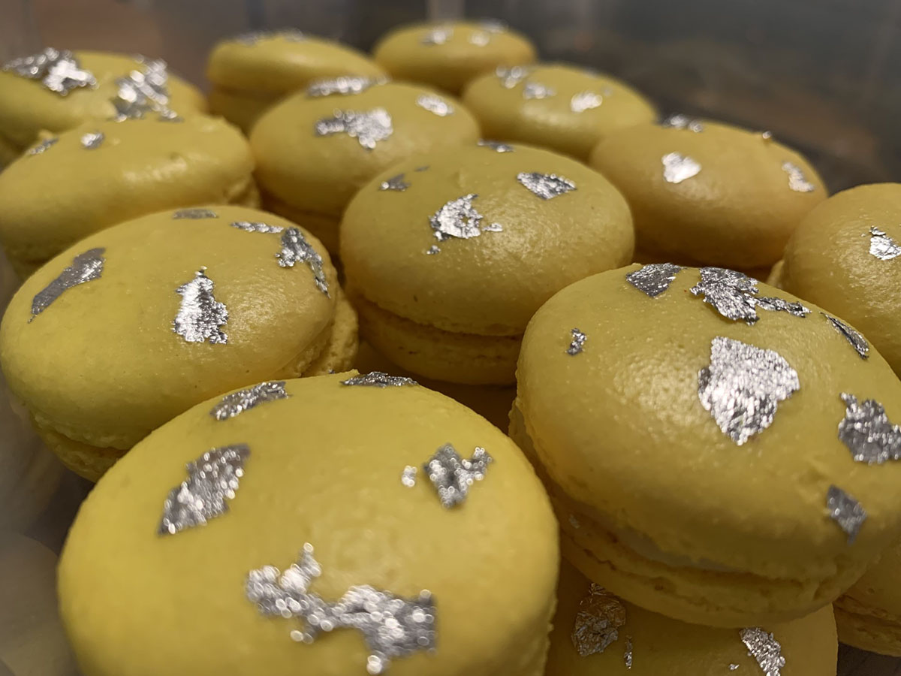

The macaron
A macaron is a delicate and popular French pastry that consists of two almond meringue cookies sandwiched together with a filling. These cookies are typically round, smooth, and have a slightly crisp exterior while being soft and chewy on the inside. Macarons come in a variety of flavors and colors, with common flavors including chocolate, vanilla, raspberry, pistachio, and many more.
The filling between the two macaron shells can be a ganache, buttercream, jam, or other flavored creams, depending on the desired taste and texture. Macarons are known for their vibrant colors and are often used for special occasions and as decorative elements in dessert displays.
It's important to note that macarons should not be confused with macaroons, which are a different type of cookie made from shredded coconut and are typically denser and chewier. Macarons are a classic French pastry, while macaroons have their roots in various culinary traditions, including Jewish cuisine.
Fun facts about macarons
Ladurée Paris is one of the market leaders when it comes to macarons. The four shops in Paris alone sell up to 12.000 macarons per day. That is around 4.3 million when you look at yearly sales.
Since macarons are made mostly with almonds and egg whites, it is actually a great source of protein. Who knew macarons could be healthy.
New York City has a macaron day, founded by Francois Payard, a renowned pastry chef. On that day macarons are given away for free, and part of the sales is also donated to a good cause.
The recipe for macarons is known to be difficult. Mainly because slight changes in the recipe can have big consequences. Also, the cookies react quite strongly to environmental changes, for example in temperature and humidity.
The traditional macaron is gluten-free. The cookie is made with just almons flour, powdered and granulated sugar and last, but not least, egg whites. Most basic fillings are also gluten-free (cream, butter, ganache, or jam), but when filling become more creative, they can contain gluten. So always good to ask.
